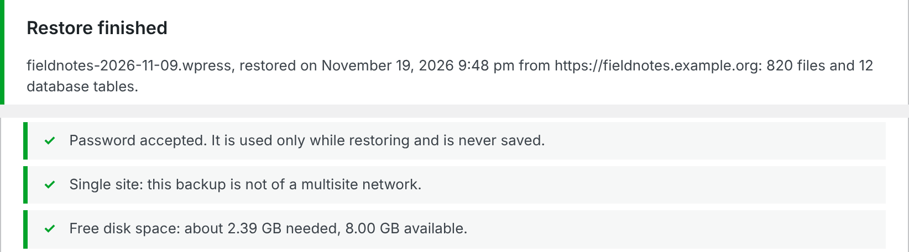
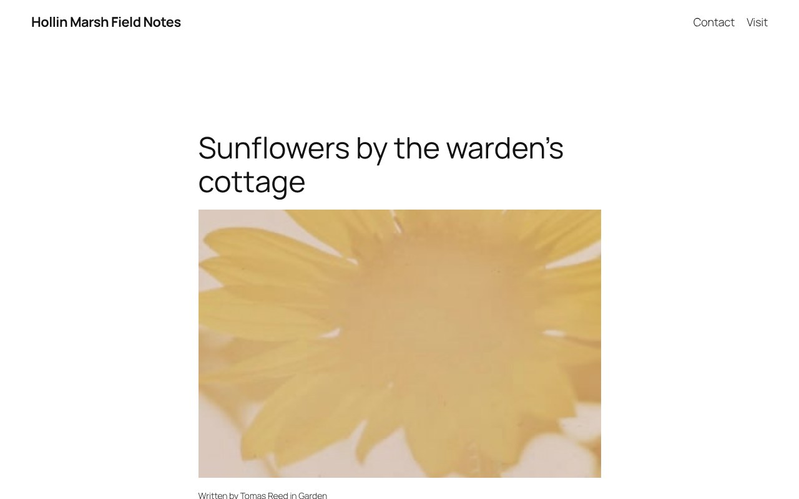
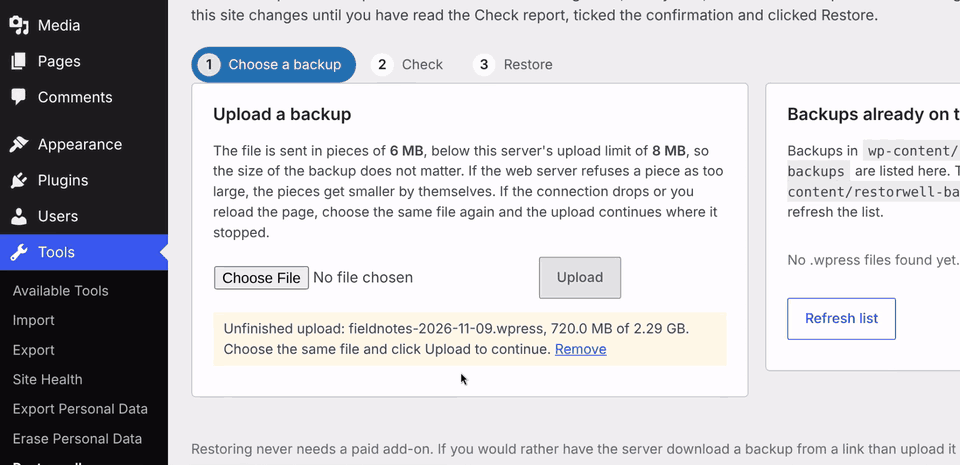
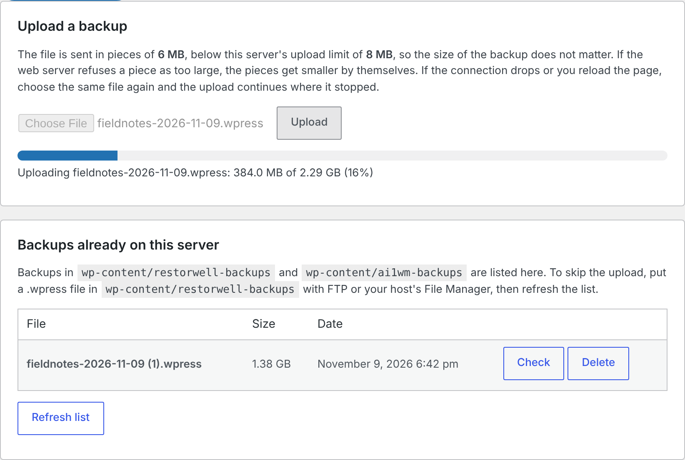
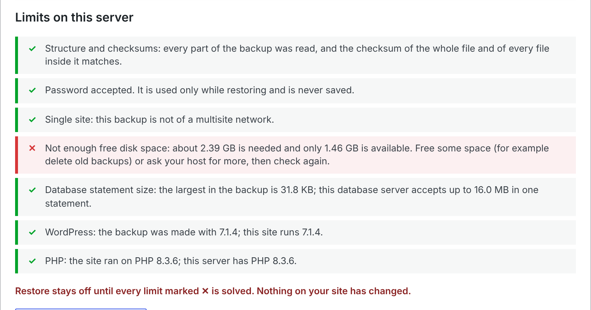
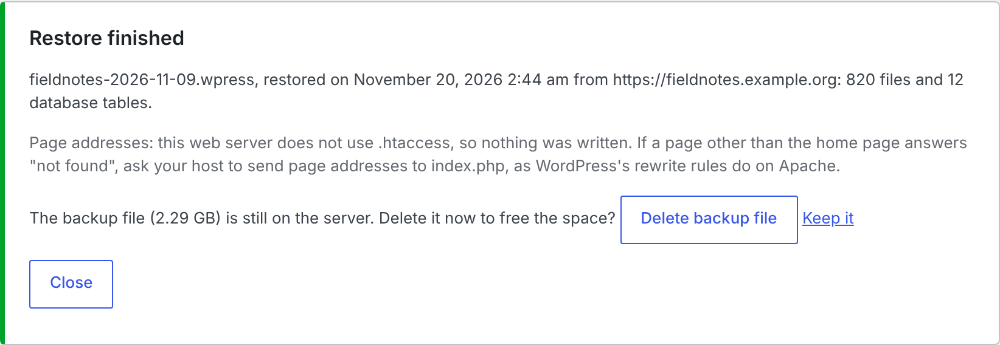
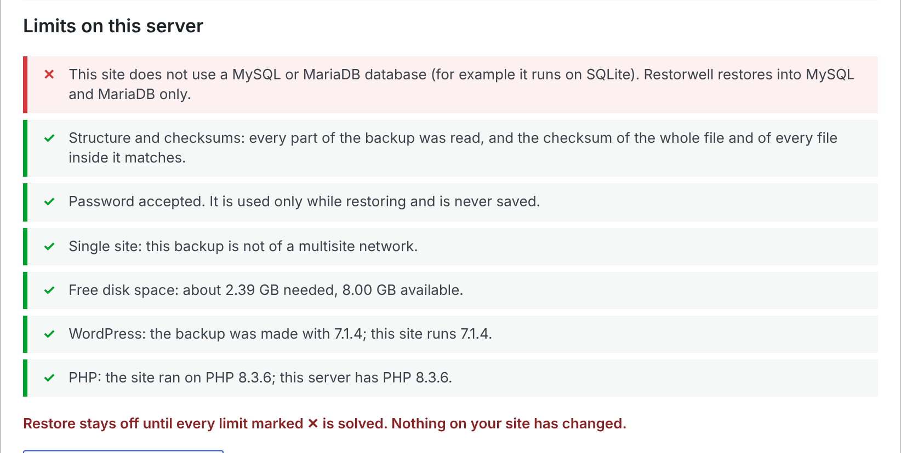

Restorwell for WordPress
Asked to pay to restore your own .wpress backup? Restorwell restores it free, past your host's upload limit, with or without a password.

- Restore your own backup, free, at any size your disk has room for, past your host's upload limit.
- Password-protected too. Type it; it is never saved.
- Know before anything changes: the whole file and your limits are checked first.
Restorwell is free: download restorwell.zip (version 1.2.0, 75 KB).
Restorwell Pro, $19 once, unlimited sites: Buy for $19
Old host closing and a slow line at home? Pro makes your new server fetch the backup from the old one, not through your connection (watch it). Restoring never needs Pro. 14-day refund if it doesn't work as described and we can't fix it.
GPL source included · support@ochrestack.com
The same site, before and after


Our demo blog, 2.29 GB, restored by wp restorwell restore on version 1.2.0 into a fresh WordPress. The first screens of its home page and of this post, 1280 × 800, differ in 0 pixels.
Watch it restore
Other options
If you can raise the limit (.htaccess, .user.ini, or a request to your host), the same applies. Restorwell is for the rest: a backup over the limit, a password, the command line, or a full check before anything is touched. Shiftbox restores large .wpress files, but not password-protected ones, and Poly Bright Quick Restore restores them up to 512 MB (their WordPress.org listings, read November 9, 2026). Restorwell does not make backups; for new backups, use a backup plugin whose restore is free.
Swipe the picture sideways to read it.

How it works
1. Choose the backup. Upload it in pieces, or copy it in by FTP.
Swipe the picture sideways to read it.

2. Check. Every byte is read and checksummed (older backups have per-file checksums only, and the Check says so) and each limit named; Restore stays off while anything blocks it.
Swipe the picture sideways to read it.

3. Restore. Prepared beside your live site and switched in at the end; cancel before that and nothing changed. Elementor pages keep their look (tested: Elementor 4.4.0).
Swipe the picture sideways to read it.

Also free: wp restorwell restore (quick start).
Restorwell Pro: Restore from a link
For a backup on another server: paste its link, and your server fetches it, resuming after a dropped connection, then runs the same Check. For scripts, wp restorwell fetch <url> does the same on the command line.
Which link to paste, what was tested, updates
Which link to paste. Old site still online? On it, open All-in-One WP Migration > Backups, click the three dots beside the backup, right-click Download and copy the link. It looks like https://old-site.com/wp-content/ai1wm-backups/old-site-com-20261109-101500-a1b2c3d4e5f6.wpress.
- Resumes. If the connection drops, what arrived is kept; Continue picks up from there, even after closing the page.
- Says when a server cannot resume (some script-served links): you see the bytes arrive in one long request, and if your host cuts it off, Pro tells you to upload the file or use FTP instead.
- Which links work: a direct link to the .wpress file. Tested with the old site's Backups-page link (made by All-in-One WP Migration 7.113), and on our own servers with redirects, query strings (as presigned storage links have), links without a file name and servers that cannot resume; not with Amazon S3, Backblaze, Dropbox or Google Drive themselves. A Google Drive viewer page is reported as a web page.
- Why it matters: at 8 Mbit/s, uploading our 2.29 GB demo backup from home would take about 41 minutes; with Pro your connection carries none of it.
- The clip: both hosts ran on one machine (the old one on Apache, slowed to about 35 MB/s); faster parts say "sped up".
How updates reach you: Pro never checks for updates itself. Each new version is added to your Polar purchase at no charge: sign in to Polar's customer portal with your purchase e-mail, download the zip, then Upload Plugin and "Replace current with uploaded". Your backups are not touched. The Pro download, restorwell-pro.zip 1.1.0, carries Restorwell 1.2.0 and installs it in one click.
$19 once, unlimited sites, updates included, no renewal · 14-day refund if it doesn't work as described and we can't fix it
It does not make backups, or restore multisite networks, other backup formats, or into SQLite sites.
More limits
- A single database row larger than the database's
max_allowed_packetcannot be restored until your host raises that setting. The Check names the size to ask for, before anything changes. - If the host kills a request in the middle of the final switch, the site stays half switched until someone opens Tools > Restorwell again, which says what happened and offers Continue or Cancel.
- If the web server refuses even 64 KB pieces, copy the backup by FTP instead.
- On nginx, the backup folder's web-access block (.htaccess, web.config) does not apply: ask your host to deny
wp-content/restorwell-backups, or delete the backup after restoring (Restorwell offers to). - Pro: addresses on private or local networks, and ports other than 80, 443 and 8080, are refused. A server that cannot resume must deliver the whole file in one request.
- If
wp-content/restorwell-backupsis a link to another disk, the restored folders cannot be moved into place; the Check says so before anything changes. - Database tables on your site that are not in the backup stay, with their data; the Check names them first. Plugins and themes not in the backup stay installed too.
- Page builders other than Elementor were not tested.
Swipe the picture sideways to read it.

How we tested
| Test | Result |
|---|---|
| 1.1.0, 8 MB / 30 s / 128 MB host: 2.29 GB password backup | 820 files, 12 tables (450 rows) match; longest request 4.0 s; peak memory 10 MiB |
| 1.0.0, same limits, nginx: 4.3 GB password backup | Restored; SHA-256 matches |
| 1.1.4: an Elementor 4.4.0 page (section with a background photo, heading, button, global styles) and a Twenty Twenty-Five block-theme post, exported by All-in-One WP Migration 7.113 and restored | Every Elementor stylesheet loads; both pages pixel-identical to the old site in Chromium |
| 1.2.0 on Apache 2.4.58 with mod_php, a WordPress installed with WP-CLI (no .htaccess), a password backup restored | WordPress's rewrite rules are written to .htaccess and a page other than the home page answers 200; with the site's folder not writable, the message says so and that page is not found |
1.2.0: the demo blog restored by wp restorwell restore into a fresh WordPress | The first screens of the home page and of a post differ in 0 pixels from the old host's |
Pro 1.1.0 wp restorwell fetch against local test servers | Byte-identical file; a dropped connection exits 6 with the bytes kept, and the same command continues from them; a short link is saved under the real file's name; a private address is refused |
| Pro 1.1.0 uploaded on its own | Activates; its notice installs and activates the free plugin it carries in one click; on WP-CLI, wp restorwell names the command that installs it |
| 1.1.3 and Pro 1.0.4 on Apache 2.4.58 with mod_php, 2 MB uploads, web-server limit 1 MB | Pieces shrink after HTTP 413; Check, restore and login; backup folder answers 403; Pro download from a server that cannot resume, with progress |
| Pro 1.0.4: the Download link from an old site's All-in-One WP Migration 7.113 Backups page | Link of the form shown above; fetched file identical (SHA-256); the Check accepts it |
| Backup versions restored | 7.113 (all kinds); 7.62, 7.80, 7.98, 7.100, 7.101 (password); 7.0, 7.40, 7.62, 7.80, 7.100 (plain) |
On 1.1.0, behind nginx refusing bodies over 1 MB, the pieces got smaller after HTTP 413 and the upload completed. Tested on: Linux, WordPress 7.1.4, PHP 8.3.6, MariaDB 10.11.14, Apache 2.4.58 with mod_php and PHP's built-in server. The test suite (196 tests) passed on 1.2.0 and Pro 1.1.0 there; uploads and Pro downloads were driven in Chromium 141. Version 1.0.0 was also installed and run on WordPress 6.5.14 and PHP 7.4.33; that has not been re-run on 1.1.x. Requires WordPress 6.5 or later and PHP 7.4 or later (64-bit for backups over 2 GB), with OpenSSL for password-protected backups and bz2 for bzip2 ones. Not tested: MySQL (only MariaDB was run); servers on Windows or macOS; LiteSpeed, IIS, and Apache with PHP-FPM; browsers other than Chromium; password-protected backups made before version 7.62. Timings come from a fast test machine: they show each request stays short, not how fast your host is.
How the images were made
Captures of a real WordPress 7.1.4 with Restorwell 1.2.0 and Pro 1.1.0, in Chromium 141, on a host with an 8 MB upload limit, 30-second requests and 128 MB of memory. The backup is our demo blog, Hollin Marsh Field Notes: 16 posts, 2 pages, the 36 CC0 photographs that ship with Twenty Twenty-Five and 10 videos made from them, 2.29 GB with a password. Three things differ from a real host so the moments could be captured: the disk-space image reports 1.46 GB free, the progress steps were made smaller, and Pro downloads from a second web server on the same machine. The SQLite image is from a WordPress on the SQLite Database Integration plugin 3.1.3. The demo video was recorded on 1.2.0 with steps set to 0.3 s; the Pro clip was recorded on 1.1.4 and Pro 1.0.5 (the screens it shows are unchanged in 1.2.0 and Pro 1.1.0) with the old host on Apache, slowed to about 35 MB/s and stopped by hand at 45 %. The before and after is the demo blog on the PHP built-in server, then restored into a fresh WordPress on the same.
Details
- Refund and what was tested: 14-day refund if it doesn't work as described and we can't fix it (terms). Tested on WordPress 7.1.4 and PHP 8.3.6 on Linux; Windows and macOS untested (full list).
- Privacy: the free plugin makes no network request; Pro contacts only the address you type.
- Install: the quick start.